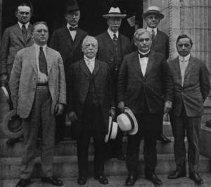

The New Economic Age. —The spirit of criticism and the measures of reform designed to meet it, which characterized the opening years of the twentieth century, were merely the signs of a new age. The nation had definitely passed into industrialism. The number of city dwellers employed for wages as contrasted with the farmers working on their own land was steadily mounting. The free land, once the refuge of restless workingmen of the East and the immigrants from Europe, was a thing of the past. As President Roosevelt later said in speaking of the great coal strike, "a few generations ago, the American workman could have saved money, gone West, and taken up a homestead. Now the free lands were gone. In earlier days, a man who began with a pick and shovel might come to own a mine. That outlet was now closed as regards the immense majority.... The majority of men who earned wages in the coal industry, if they wished to progress at all, were compelled to progress not by ceasing to be wage-earners but by improving the conditions under which all the wage-earners of the country lived and worked."
The disappearance of the free land, President Roosevelt went on to say, also produced "a crass inequality in the bargaining relation of the employer and the individual employee standing alone. The great coal-mining and coal-carrying companies which employed their tens of thousands could easily dispense with
the services of any particular miner. The miner, on the other hand, however expert, could not dispense with the companies. He needed a job; his wife and children would starve if he did not get one....
Individually the miners were impotent when they sought to enter a wage contract with the great companies; they could make fair terms only by uniting into trade unions to bargain collectively." It was of this state of affairs that President Taft spoke when he favored the modification of the common law "so as to put employees of little power and means on a level with their employers in adjusting and agreeing upon their mutual obligations."
John D. Rockefeller, Jr., on the side of the great captains of industry, recognized the same facts. He said:
"In the early days of the development of industry, the employer and capital investor were frequently one.
Daily contact was had between him and his employees, who were his friends and neighbors.... Because of the proportions which modern industry has attained, employers and employees are too often strangers to each other.... Personal relations can be revived only through adequate representation of the employees.
Representation is a principle which is fundamentally just and vital to the successful conduct of industry....
It is not consistent for us as Americans to demand democracy in government and practice autocracy in industry.... With the developments what they are in industry to-day, there is sure to come a progressive evolution from aristocratic single control, whether by capital, labor, or the state, to democratic, coöperative control by all three."
Coöperation between Employers and Employees
Company Unions. —The changed economic life described by the three eminent men just quoted was acknowledged by several great companies and business concerns. All over the country decided efforts were made to bridge the gulf which industry and the corporation had created. Among the devices adopted was that of the "company union." In one of the Western lumber mills, for example, all the employees were invited to join a company organization; they held monthly meetings to discuss matters of common concern; they elected a "shop committee" to confer with the representatives of the company; and periodically the agents of the employers attended the conferences of the men to talk over matters of mutual interest. The function of the shop committee was to consider wages, hours, safety rules, sanitation, recreation and other problems. Whenever any employee had a grievance he took it up with the foreman and, if it was not settled to his satisfaction, he brought it before the shop committee. If the members of the shop committee decided in favor of the man with a grievance, they attempted to settle the matter with the company's agents. All these things failing, the dispute was transferred to a grand meeting of all the employees with the employers' representatives, in common council. A deadlock, if it ensued from such a conference, was broken by calling in impartial arbitrators selected by both sides from among citizens outside the mill. Thus the employees were given a voice in all decisions affecting their work and welfare; rights and grievances were treated as matters of mutual interest rather than individual concern.
Representatives of trade unions from outside, however, were rigidly excluded from all negotiations between employers and the employees.
Profit-sharing. —Another proposal for drawing capital and labor together was to supplement the wage system by other ties. Sometimes lump sums were paid to employees who remained in a company's service for a definite period of years. Again they were given a certain percentage of the annual profits. In other instances, employees were allowed to buy stock on easy terms and thus become part owners in the concern. This last plan was carried so far by a large soap manufacturing company that the employees, besides becoming stockholders, secured the right to elect representatives to serve on the board of directors who managed the entire business. So extensive had profit-sharing become by 1914 that the Federal Industrial Relations Committee, appointed by the President, deemed it worthy of a special study. Though opposed by regular trade unions, it was undoubtedly growing in popularity.
Labor Managers and Welfare Work. —Another effort of employers to meet the problems of the new age
appeared in the appointment of specialists, known as employment managers, whose task it was to study the relations existing between masters and workers and discover practical methods for dealing with each grievance as it arose. By 1918, hundreds of big companies had recognized this modern "profession" and universities were giving courses of instruction on the subject to young men and women. In that year a national conference of employment managers was held at Rochester, New York. The discussion revealed a wide range of duties assigned to managers, including questions of wages, hours, sanitation, rest rooms, recreational facilities, and welfare work of every kind designed to make the conditions in mills and factories safer and more humane. Thus it was evident that hundreds of employers had abandoned the old idea that they were dealing merely with individual employees and that their obligations ended with the payment of any wages they saw fit to fix. In short, they were seeking to develop a spirit of coöperation to take the place of competition and enmity; and to increase the production of commodities by promoting the efficiency and happiness of the producers.
The Rise and Growth of Organized Labor
The American Federation of Labor. —Meanwhile a powerful association of workers representing all the leading trades and crafts, organized into unions of their own, had been built up outside the control of employers. This was the American Federation of Labor, a nation-wide union of unions, founded in 1886
on the basis of beginnings made five years before. At the time of its establishment it had approximately 150,000 members. Its growth up to the end of the century was slow, for the total enrollment in 1900 was only 300,000. At that point the increase became marked. The membership reached 1,650,000 in 1904 and more than 3,000,000 in 1919. To be counted in the ranks of organized labor were several strong unions, friendly to the Federation, though not affiliated with it. Such, for example, were the Railway Brotherhoods with more than half a million members. By the opening of 1920 the total strength of organized labor was put at about 4,000,000 members, meaning, if we include their families, that nearly one-fifth of the people of the United States were in some positive way dependent upon the operations of trade unions.
Historical Background. —This was the culmination of a long and significant history. Before the end of the eighteenth century, the skilled workmen—printers, shoemakers, tailors, and carpenters—had, as we have seen, formed local unions in the large cities. Between 1830 and 1860, several aggressive steps were taken in the American labor movement. For one thing, the number of local unions increased by leaps and bounds in all the industrial towns. For another, there was established in every large manufacturing city a central labor body composed of delegates from the unions of the separate trades. In the local union the printers or the cordwainers, for example, considered only their special trade problems. In the central labor union, printers, cordwainers, iron molders, and other craftsmen considered common problems and learned to coöperate with one another in enforcing the demands of each craft. A third step was the federation of the unions of the same craftsmen in different cities. The printers of New York, Philadelphia, Boston, and other towns, for instance, drew together and formed a national trade union of printers built upon the local unions of that craft. By the eve of the Civil War there were four or five powerful national unions of this character. The expansion of the railway made travel and correspondence easier and national conventions possible even for workmen of small means. About 1834 an attempt was made to federate the unions of all the different crafts into a national organization; but the effort was premature.
The National Labor Union. —The plan which failed in 1834 was tried again in the sixties. During the war, industries and railways had flourished as never before; prices had risen rapidly; the demand for labor had increased; wages had mounted slowly, but steadily. Hundreds of new local unions had been founded and eight or ten national trade unions had sprung into being. The time was ripe, it seemed, for a national consolidation of all labor's forces; and in 1866, the year after the surrender of General Lee at Appomattox, the "National Labor Union" was formed at Baltimore under the leadership of an experienced organizer, W.H. Sylvis of the iron molders. The purpose of the National Labor Union was not merely to secure labor's standard demands touching hours, wages, and conditions of work or to maintain the gains already
won. It leaned toward political action and radical opinions. Above all, it sought to eliminate the conflict between capital and labor by making workingmen the owners of shops through the formation of coöperative industries. For six years the National Labor Union continued to hold conferences and carry on its propaganda; but most of the coöperative enterprises failed, political dissensions arose, and by 1872 the experiment had come to an end.
The Knights of Labor. —While the National Labor Union was experimenting, there grew up in the industrial world a more radical organization known as the "Noble Order of the Knights of Labor." It was founded in Philadelphia in 1869, first as a secret society with rituals, signs, and pass words; "so that no spy of the boss can find his way into the lodge room to betray his fellows," as the Knights put it. In form the new organization was simple. It sought to bring all laborers, skilled and unskilled, men and women, white and colored, into a mighty body of local and national unions without distinction of trade or craft. By 1885, ten years after the national organization was established, it boasted a membership of over 700,000. In philosophy, the Knights of Labor were socialistic, for they advocated public ownership of the railways and other utilities and the formation of coöperative societies to own and manage stores and factories.
As the Knights were radical in spirit and their strikes, numerous and prolonged, were often accompanied by violence, the organization alarmed employers and the general public, raising up against itself a vigorous opposition. Weaknesses within, as well as foes from without, started the Knights on the path to dissolution. They waged more strikes than they could carry on successfully; their coöperative experiments failed as those of other labor groups before them had failed; and the rank and file could not be kept in line.
The majority of the members wanted immediate gains in wages or the reduction of hours; when their hopes were not realized they drifted away from the order. The troubles were increased by the appearance of the American Federation of Labor, a still mightier organization composed mainly of skilled workers who held strategic positions in industry. When they failed to secure the effective support of the Federation in their efforts to organize the unskilled, the employers closed in upon them; then the Knights declined rapidly in power. By 1890 they were a negligible factor and in a short time they passed into the limbo of dead experiments.
The Policies of the American Federation. —Unlike the Knights of Labor, the American Federation of Labor sought, first of all, to be very practical in its objects and methods. It avoided all kinds of socialistic theories and attended strictly to the business of organizing unions for the purpose of increasing wages, shortening hours, and improving working conditions for its members. It did not try to include everybody in one big union but brought together the employees of each particular craft whose interests were clearly the same. To prepare for strikes and periods of unemployment, it raised large funds by imposing heavy dues and created a benefit system to hold men loyally to the union. In order to permit action on a national scale, it gave the superior officers extensive powers over local unions.
While declaring that employers and employees had much in common, the Federation strongly opposed company unions. Employers, it argued, were affiliated with the National Manufacturers' Association or with similar employers' organizations; every important industry was now national in scope; and wages and hours, in view of competition with other shops, could not be determined in a single factory, no matter how amicable might be the relations of the company and its workers in that particular plant. For these reasons, the Federation declared company unions and local shop committees inherently weak; it insisted that hours, wages, and other labor standards should be fixed by general trade agreements applicable to all the plants of a given industry, even if subject to local modifications.
At the same time, the Federation, far from deliberately antagonizing employers, sought to enlist their coöperation and support. It affiliated with the National Civic Federation, an association of business men, financiers, and professional men, founded in 1900 to promote friendly relations in the industrial world. In brief, the American Federation of Labor accepted the modern industrial system and, by organization within it, endeavored to secure certain definite terms and conditions for trade unionists.
The Wider Relations of Organized Labor
The Socialists. —The trade unionism "pure and simple," espoused by the American Federation of Labor, seemed to involve at first glance nothing but businesslike negotiations with employers. In practice it did not work out that way. The Federation was only six years old when a new organization, appealing directly for the labor vote—namely, the Socialist Labor Party—nominated a candidate for President, launched into a national campaign, and called upon trade unionists to desert the older parties and enter its fold.
The socialistic idea, introduced into national politics in 1892, had been long in germination. Before the Civil War, a number of reformers, including Nathaniel Hawthorne, Horace Greeley, and Wendell Phillips, deeply moved by the poverty of the great industrial cities, had earnestly sought relief in the establishment of coöperative or communistic colonies. They believed that people should go into the country, secure land and tools, own them in common so that no one could profit from exclusive ownership, and produce by common labor the food and clothing necessary for their support. For a time this movement attracted wide interest, but it had little vitality. Nearly all the colonies failed. Selfishness and indolence usually disrupted the best of them.
In the course of time this "Utopian" idea was abandoned, and another set of socialist doctrines, claiming to be more "scientific," appeared instead. The new school of socialists, adopting the principles of a German writer and agitator, Karl Marx, appealed directly to workingmen. It urged them to unite against the capitalists, to get possession of the machinery of government, and to introduce collective or public ownership of railways, land, mines, mills, and other means of production. The Marxian socialists, therefore, became political. They sought to organize labor and to win elections. Like the other parties they put forward candidates and platforms. The Socialist Labor party in 1892, for example, declared in favor of government ownership of utilities, free school books, woman suffrage, heavy income taxes, and the referendum. The Socialist party, founded in 1900, with Eugene V. Debs, the leader of the Pullman strike, as its candidate, called for public ownership of all trusts, monopolies, mines, railways; and the chief means of production. In the course of time the vote of the latter organization rose to considerable proportions, reaching almost a million in 1912. It declined four years later and then rose in 1920 to about the same figure.
In their appeal for votes, the socialists of every type turned first to labor. At the annual conventions of the American Federation of Labor they besought the delegates to endorse socialism. The president of the Federation, Samuel Gompers, on each occasion took the floor against them. He repudiated socialism and the socialists, on both theoretical and practical grounds. He opposed too much public ownership, declaring that the government was as likely as any private employer to oppress labor. The approval of socialism, he maintained, would split the Federation on the rock of politics, weaken it in its fight for higher wages and shorter hours, and prejudice the public against it. At every turn he was able to vanquish the socialists in the Federation, although he could not prevent it from endorsing public ownership of the railways at the convention of 1920.
The Extreme Radicals. —Some of the socialists, defeated in their efforts to capture organized labor and seeing that the gains in elections were very meager, broke away from both trade unionism and politics.
One faction, the Industrial Workers of the World, founded in 1905, declared themselves opposed to all capitalists, the wages system, and craft unions. They asserted that the "working class and the employing class have nothing in common" and that trade unions only pitted one set of workers against another set.
They repudiated all government ownership and the government itself, boldly proclaiming their intention to unite all employees into one big union and seize the railways, mines, and mills of the country. This doctrine, so revolutionary in tone, called down upon the extremists the condemnation of the American Federation of Labor as well as of the general public. At its convention in 1919, the Federation went on record as "opposed to Bolshevism, I.W.W.-ism, and the irresponsible leadership that encourages such a

policy." It announced its "firm adherence to American ideals."
The Federation and Political Issues. —The hostility of the Federation to the socialists did not mean, however, that it was indifferent to political issues or political parties. On the contrary, from time to time, at its annual conventions, it endorsed political and social reforms, such as the initiative, referendum, and recall, the abolition of child labor, the exclusion of Oriental labor, old-age pensions, and government ownership. Moreover it adopted the policy of "rewarding friends and punishing enemies" by advising members to vote for or against candidates according to their stand on the demands of organized labor.
Copyright by Underwood and Underwood, N.Y.
Samuel Gompers and Other Labor Leaders
This policy was pursued with especial zeal in connection with disputes over the use of injunctions in labor controversies. An injunction is a bill or writ issued by a judge ordering some person or corporation to do or to refrain from doing something. For example, a judge may order a trade union to refrain from interfering with non-union men or to continue at work handling goods made by non-union labor; and he may fine or imprison those who disobey his injunction, the penalty being inflicted for "contempt of court."
This ancient legal device came into prominence in connection with nation-wide railway strikes in 1877. It was applied with increasing frequency after its effective use against Eugene V. Debs in the Pullman strike of 1894.
Aroused by the extensive use of the writ, organized labor demanded that the power of judges to issue injunctions in labor disputes be limited by law. Representatives of the unions sought support from the Democrats and the Republicans; they received from the former very specific and cordial endorsement. In 1896 the Democratic platform denounced "government by injunction as a new and highly dangerous form of oppression." Mr. Gompers, while refusing to commit the Federation to Democratic politics, privately supported Mr. Bryan. In 1908, he came out openly and boasted that eighty per cent of the votes of the Federation had been cast for the Democratic candidate. Again in 1912 the same policy was pursued. The reward was the enactment in 1914 of a federal law exempting trade unions from prosecution as combinations in restraint of trade, limiting the use of the injunction in labor disputes, and prescribing trial by jury in case of contempt of court. This measure was hailed by Mr. Gompers as the "Magna Carta of Labor" and a vindication of his policy. As a matter of fact, however, it did not prevent the continued use of injunctions against trade unions. Nevertheless Mr. Gompers was unshaken in his conviction that organized labor should not attempt to form an independent political party or endorse socialist or other radical economic theories.
Organized Labor and the Public. —Besides its relations to employers, radicals within its own ranks, and political questions, the Federation had to face responsibilities to the general public. With the passing of time these became heavy and grave. While industries were small and conflicts were local in character, a strike seldom affected anybody but the employer and the employees immediately involved in it. When, however, industries and trade unions became organized on a national scale and a strike could paralyze a basic enterprise like coal mining or railways, the vital interests of all citizens were put in jeopardy.
Moreover, as increases in wages and reductions in hours often added directly to the cost of living, the action of the unions affected the well-being of all—the food, clothing, and shelter of the whole people.
For the purpose of meeting the issue raised by this state of affairs, it was suggested that employers and employees should lay their disputes before commissions of arbitration for decision and settlement.
President Cleveland, in a message of April 2, 1886, proposed such a method for disposing of industrial controversies, and two years later Congress enacted a voluntary arbitration law applicable to the railways.
The principle was extended in 1898 and again in 1913, and under the authority of the federal government many contentions in the railway world were settled by arbitration.
The success of such legislation induced some students of industrial questions to urge that unions and employers should be compelled to submit all disputes to official tribunals of arbitration. Kansas actually passed such a law in 1920. Congress in the Esch-Cummins railway bill of the same year created a federal board of nine members to which all railway controversies, not settled by negotiation, must be submitted.
Strikes, however, were not absolutely forbidden. Generally speaking, both employers and employees opposed compulsory adjustments without offering any substitute in case voluntary arbitration should not be accepted by both parties to a dispute.
Immigration and Americanization
The Problems of Immigration. —From its very inception, the American Federation of Labor, like the Knights of Labor before it, was confronted by numerous questions raised by the ever swelling tide of aliens coming to our shores. In its effort to make each trade union all-inclusive, it had to wrestle with a score or more languages. When it succeeded in thoroughly organizing a craft, it often found its purposes defeated by an influx of foreigners ready to work for lower wages and thus undermine the foundations of the union.
At the same time, persons outside the labor movement began to be apprehensive as they contemplated the undoubted evil, as well as the good, that seemed to be associated with the "alien invasion." They saw whole sections of great cities occupied by people speaking foreign tongues, reading only foreign newspapers, and looking to the Old World alone for their ideas and their customs. They witnessed an expanding army of total illiterates, men and women who could read and write no language at all; while among those aliens who could read few there were who knew anything of American history, traditions, and ideals. Official reports revealed that over twenty per cent of the men of the draft army during the World War could not read a newspaper or write a letter home. Perhaps most alarming of all was the discovery that thousands of alien men are in the United States only on a temporary sojourn, solely to make money and return home with their savings. These men, willing to work for low wages and live in places unfit for human beings, have no stake in this country and do not care what becomes of it.
The Restriction of Immigration. —In all this there was, strictly speaking, no cause for surprise. Since the foundation of our republic the policy of the government had been to encourage the coming of the alien.
For nearly one hundred years no restraining act was passed by Congress, while two important laws positively encouraged it; namely, the homestead act of 1862 and the contract immigration law of 1864.
Not until American workingmen came into open collision with cheap Chinese labor on the Pacific Coast did the federal government spread the first measure of limitation on the statute books. After the discovery
of gold, and particularly after the opening of the railway construction era, a horde of laborers from China descended upon California. Accustomed to starvation wages and indifferent to the conditions of living, they threatened to cut the American standard to the point of subsistence. By 1876 the protest of American labor was loud and long and both the Republicans and the Democrats gave heed to it. In 1882 Congress enacted a law prohibiting the admission of Chinese laborers to the United States for a term of ten years—later extended by legislation. In a little while the demand arose for the exclusion of the Japanese as well. In this case no exclusion law was passed; but an understanding was reached by which Japan agreed not to issue passports to her laborers authorizing them to come to the United States. By act of Congress in 1907 the President was empowered to exclude any laborers who, having passports to Canada, Hawaii, or Mexico, attempted to enter our country.
These laws and agreements, however, did not remove all grounds for the agitation of the subject. They were difficult to enforce and it was claimed by residents of the Coast that in spite of federal authority Oriental laborers were finding their way into American ports. Moreover, several Western states, anxious to preserve the soil for American ownership, enacted laws making it impossible for Chinese and Japanese to buy land outright; and in other ways they discriminated against Orientals. Such proceedings placed the federal government in an embarrassing position. By treaty it had guaranteed specific rights to Japanese citizens in the United States, and the government at Tokyo contended that the state laws just cited violated the terms of the international agreement. The Western states were fixed in their determination to control Oriental residents; Japan was equally persistent in asking that no badge of inferiority be attached to her citizens. Subjected to pressure on both sides, the federal government sought a way out of the deadlock.
Having embarked upon the policy of restriction in 1882, Congress readily extended it. In that same year it barred paupers, criminals, convicts, and the insane. Three years later, mainly owing to the pressure of the Knights of Labor, it forbade any person, company, or association to import aliens under contract. By an act of 1887, the contract labor restriction was made even more severe. In 1903, anarchists were excluded and the bureau of immigration was transferred from the Treasury Department to the Department of Commerce and Labor, in order to provide for a more rigid execution of the law. In 1907 the classes of persons denied admission were widened to embrace those suffering from physical and mental defects and otherwise unfit for effective citizenship. When the Department of Labor was established in 1913 the enforcement of the law was placed in the hands of the Secretary of Labor, W.B. Wilson, who was a former leader in the American Federation of Labor.
The Literacy Test. —Still the advocates of restriction were not satisfied. Still organized labor protested and demanded more protection against the competition of immigrants. In 1917 it won a thirty-year battle in the passage of a bill excluding "all aliens over sixteen years of age, physically capable of reading, who cannot read the English language or some other language or dialect, including Hebrew or Yiddish." Even President Wilson could not block it, for a two-thirds vote to overcome his veto was mustered in Congress.
This act, while it served to exclude illiterates, made no drastic cut in the volume of immigration. Indeed a material reduction was resolutely opposed in many quarters. People of certain nationalities already in the United States objected to every barrier that shut out their own kinsmen. Some Americans of the old stock still held to the idea that the United States should continue to be an asylum for "the oppressed of the earth." Many employers looked upon an increased labor supply as the means of escaping what they called
"the domination of trade unions." In the babel of countless voices, the discussion of these vital matters went on in town and country.
Americanization. —Intimately connected with the subject of immigration was a call for the
"Americanization" of the alien already within our gates. The revelation of the illiteracy in the army raised the cry and the demand was intensified when it was found that many of the leaders among the extreme radicals were foreign in birth and citizenship. Innumerable programs for assimilating the alien to American life were drawn up, and in 1919 a national conference on the subject was held in Washington under the
auspices of the Department of the Interior. All were agreed that the foreigner should be taught to speak and write the language and understand the government of our country. Congress was urged to lend aid in this vast undertaking. America, as ex-President Roosevelt had said, was to find out "whether it was a nation or a boarding-house."
General References
J.R. Commons and Associates, History of Labor in the United States (2 vols.).
Samuel Gompers, Labor and the Common Welfare.
W.E. Walling, Socialism as It Is.
W.E. Walling (and Others), The Socialism of Today.
R.T. Ely, The Labor Movement in America.
T.S. Adams and H. Sumner, Labor Problems.
J.G. Brooks, American Syndicalism and Social Unrest.
P.F. Hall, Immigration and Its Effects on the United States.
Research Topics
The Rise of Trade Unionism. —Mary Beard, Short History of the American Labor Movement, pp. 10-18, 47-53, 62-79; Carlton, Organized Labor in American History, pp. 11-44.
Labor and Politics. —Beard, Short History, pp. 33-46, 54-61, 103-112; Carlton, pp. 169-197; Ogg, National Progress (American Nation Series), pp. 76-85.
The Knights of Labor. —Beard, Short History, pp. 116-126; Dewey, National Problems (American Nation Series), pp. 40-49.
The American Federation of Labor—Organization and Policies. —Beard, Short History, pp. 86-112.
Organized Labor and the Socialists. —Beard, Short History, pp. 126-149.
Labor and the Great War. —Carlton, pp. 282-306; Beard, Short History, pp. 150-170.
Questions
1. What are the striking features of the new economic age?
2. Give Mr. Rockefeller's view of industrial democracy.
3. Outline the efforts made by employers to establish closer relations with their employees.
4. Sketch the rise and growth of the American Federation of Labor.
5. How far back in our history does the labor movement extend?
6. Describe the purposes and outcome of the National Labor Union and the Knights of Labor.
7. State the chief policies of the American Federation of Labor.
8. How does organized labor become involved with outside forces?
9. Outline the rise of the socialist movement. How did it come into contact with the American Federation?
10. What was the relation of the Federation to the extreme radicals? To national politics? To the public?
11. Explain the injunction.
12. Why are labor and immigration closely related?
13. Outline the history of restrictions on immigration.
14. What problems arise in connection with the assimilation of the alien to American life?